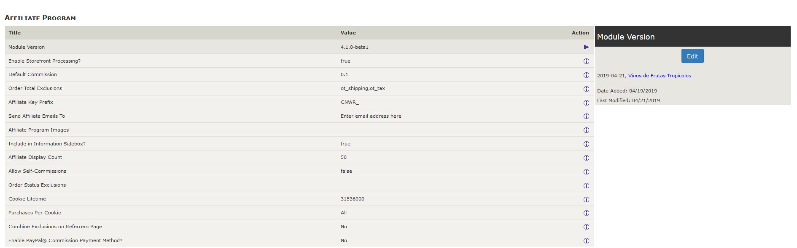
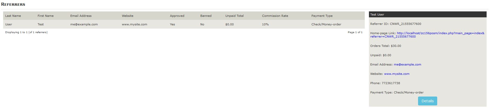
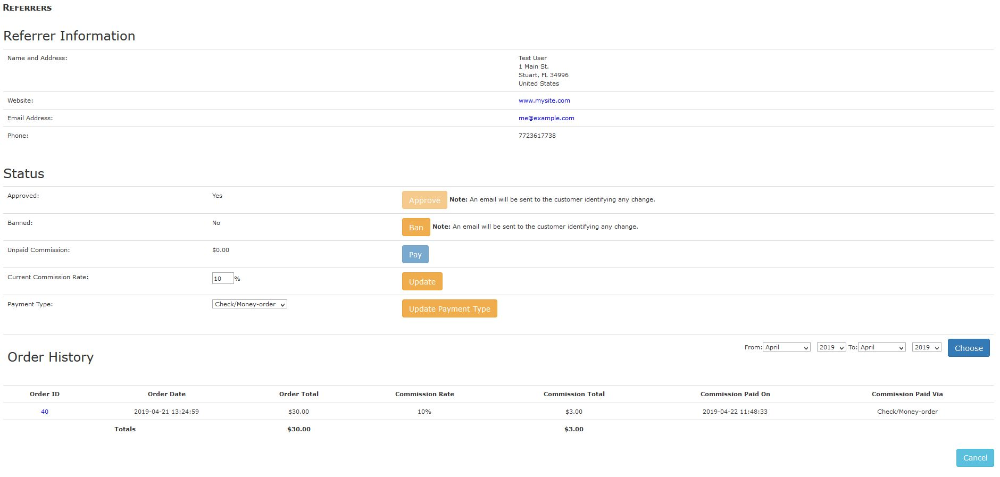
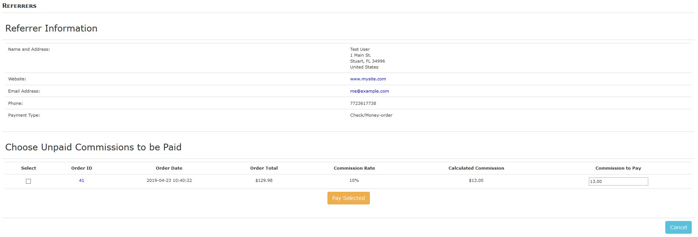
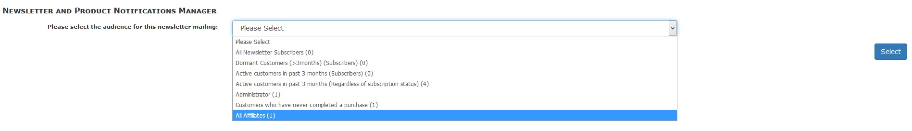

Snap Affiliates for Zen Cart 1.5.7a and later
Version 4.2.0 by lat9
Copyright © 2013-2021 Vinos de Frutas Tropicales
Current support thread at Zen Cart Forums: www.zen-cart.com/showthread.php?206579-Snap-Affiliates-v2-0-for-Zen-Cart-v1-5-0-and-later. This software is provided for your use under the GNU General Public License v2.0.
Usage Notes
- Starting with v4.2.0, this plugin supports only Zen Cart versions 1.5.7a and later; if you are still using an older version of Zen Cart, please use v4.1.3 of this plugin.
- Starting with v4.0.0, this plugin supports only Zen Cart versions 1.5.5a and later; if you are still using an older version of Zen Cart, please use v3.0.4 of this plugin.
- In the United States (and possibly other countries), there are tax implications associated with creating an affiliate program for your website. I am neither a lawyer nor an accountant, but you should perform your own due diligence by performing a web-search for affiliate marketing 1099.
What it does
This plugin enables your store to have an "Affiliate Program" where an authorized affiliate can receive a commission for any sales that they "drive" to your store. To become an authorized affiliate, the affiliate must create an account with your store and then submit to you (via the link to the referrer_signup page at either My Account->Sign Me Up Today or the link provided by the Information Sidebox) the website from which they intend to promote your store. You'll receive an email informing you of the signup and you can authorize the affiliate using an admin-level tool.
Once authorized, the affiliate can access your site's referrer_tools and referrer_main pages via links from their account page — My Account->Affiliate Marketing Tools and My Account->Orders and Payments, respectively — to view a snapshot of their current commission history and access the information necessary to include their affiliate key in links from their store to yours. The affiliate links include a variable named referrer that identifies the affiliate's affiliate key which is created once you approve the affiliate's sign-up.
When one of your store's affiliates' customers clicks on an affiliate link, your store's customization detects the referrer variable and creates a cookie named referrer_key that contains the affiliate's key value. The cookie's lifetime is 1 year (31536000 seconds); you can change this value via an admin configuration. Each time a customer comes to your store with the referrer variable in the link, the referrer_key cookie is overwritten. So long as the cookie's lifetime has not expired, the customer has not cleared their browser cache and/or cookies and the affiliate is still in "good standing" (i.e. has not been banned), any purchase that the customer makes on your website results in an earned commission for that affiliate. Starting with v2.3.0, you can limit the number of customer purchases for which an affiliate receives a commission; see Purchases Per Cookie for more information.
Starting with v3.0.0, your affiliates can choose their method of commission-payment, either Check/Money Order or (optionally) via PayPal® to their PayPal account email address. Refer to Commission Payment Types for more information.
Customer Interfaces
Information Sidebox
An Affiliate Program link is added to the Information sidebox to point people to the referrer_signup page, if enabled by the plugin's configuration settings.
Note: If your store doesn't use the information sidebox, you can add PHP code to your alternate menu structure to create the "Referrer Signup" link. Here's the code used in the sidebox to add the link; you'll need to change the $information[] variable to match your menu's structure:
if (defined('SNAP_INFORMATION_SIDEBOX') && SNAP_INFORMATION_SIDEBOX === 'true') {
$information[] = '<a href="' . zen_href_link(FILENAME_REFERRER_SIGNUP, '', 'SSL'). '">' . BOX_INFORMATION_REFERRER_TERMS . '</a>';
}
My Account Information Page: account
A new group (Referral Program) is added with the following links:
- Sign Me Up Today. This link is displayed only if the customer has not yet enrolled in your affiliate program and provides a link to the referrer_signup page.
- Orders and Payments. This link is displayed only if the customer has enrolled in, been approved for and is not currently banned from your affiliate program, providing a link to the referrer_main page.
- Affiliate Marketing Tools. This link is displayed only if the customer has enrolled in, been approved for and is not currently banned from your affiliate program, providing a link to the referrer_tools page.
Affiliate Signup Page: referrer_signup
This page operates differently based on whether or not the customer has previously signed up for your program. If the customer has not signed up, a form is presented allowing the customer to enter the website address from which they intend to link to your site with their affiliate key followed by your affiliate program's terms and conditions. Otherwise, if the page is invoked with the terms variable (e.g. www.mysite.com/index.php?main_page=referrer_signup&terms) your affiliate program's terms and conditions will be displayed; otherwise, the page redirects to referrer_main page.
Affiliate Main Page: referrer_main
This page operates differently based on whether the customer has previously signed up for your program and, if so, their current approval/banned status. If the customer has not signed up, this page redirects to the referrer_signup page. Otherwise, if either the customer is not yet approved or has been banned from the program, this page displays a message indicating that their submission is in the approval process. Finally, if the customer has signed up, is approved and is not banned, this page displays three sections:
- My Referrer Information. Displays the customer's affiliate key, last payment date and current commission rate.
- Sales Summary. Displays the current sales and unpaid commission and their year-to-date sales and commission.
- Commission-Payment Activity. Displays a form that the customer can use to search a specific time period for commission payments; details are displayed for commission payments that occurred within the selected timeframe.
Note: Affiliate sales and associated commissions are not shown for orders with an "Orders Status" value that falls in the list of Orders Status Exclusions specified by your admin.
This page only displays if a customer is signed in (redirecting to the login page otherwise), has applied (redirects to referrer_signup if not) and been approved for an affiliate account and is not currently banned, redirecting to referrer_main for either of these conditions. If the page displays, it shows either two or three sections:
- Site Link. Displays a text-area box that includes an HTML anchor link to your home page that includes the affiliate's key value. The affiliate can copy this HTML to include on their page that links back to you.
- Deep Link Generator. Displays an input field where the affiliate can enter (or paste) a link to a specific page on your site (e.g. a specific product) and then click the Transform button to add their affiliate key value to the link.
- Banners. If you have created and configured some Affiliate Program Images, this section displays each of those images along with a textarea box that includes a home-page link to your store using that image and the affiliate's key.
Zen Cart Admin Interfaces
The first time you start your Zen Cart admin after copying this plugins files to your installation, the plugin's initialization file runs. That file creates the database tables named commission and referrers, including your DB_PREFIX value, creates the settings for the plugin's configuration and creates the database settings to allow the display of Configuration->Affiliate Program and Customers->Referrers.
Configuration->Affiliate Program
As installed, the configuration screen for your affiliate program looks like the following.

The following configuration values allow you to customize your affiliate program:
- Module Version
- Displays the currently-installed version of the plugin
- Enable Storefront Processing?
- Identifies whether (true) or not the plugin's storefront processing should be enabled. The value defaults to false on initial installations; to true on upgrades from a SNAP Affiliates version prior to v4.1.0.
- Default Commission
- Contains the default commission rate for your affiliates. The value is specified as a floating-point value in the range 0.0 to 1.0 and represents the percentage that an affiliate will receive if a customer makes a purchase from your store using their referral code. (Default: 0.1 — 10%)
- Order Total Exclusions
- Contains a comma-separated, packed list (i.e. no intervening blanks) of "Order Total" classes to which the default commission does not apply. The default value ot_shipping,ot_tax results in no commission being given for shipping- and tax-related items.
- Affiliate Key Prefix
- Identifies the character prefix used to create affiliate key values, identifying a specific affiliate. Once you've started your affiliate program, don't change this value or existing affiliates will no longer be recognized! (Default: CNWR_).
- Send Affiliate Emails To
- Identify the admin-level email address to which all affiliate-related emails are sent. Emails are generated during affiliate signup (the referrer_signup page) and within your admin when an affiliate is either authorized, banned or paid.
- Affiliate Program Images
- Images that you use for your affiliate program reside in your store's /images/referrers directory (created as part of the install). Each file's name matches the template ref*.ww.hh.ext where ww is the pixel-width, hh is the pixel-height and ext is the file extension (usually gif or jpg) of the image.
You identify your images to the plugin by entering this information into a fixed template: /ww,hh,ext/[ww,hh,ext/…]. If, for example, you have two banner image files (ref.60.80.gif and ref.120.60.jpg), you will enter /60,80,gif/120,60,jpg/ into this field. If you have multiple images of the same size and filetype, their filenames must start with ref, with any suffix you like appended — e.g. ref_1.60.80.gif and ref_2.60.80.gif.
- Include in Information Sidebox?
- This true/false switch identifies whether or not an Our Affiliate Program link appears in your store's "Information" sidebox. (Default: false)
- Affiliate Display Count
- Specifies the maximum number of affiliates to display on each page of your admin's Customers->Referrers. (Default: 50)
- Allow Self-Commissions
- Identifies whether ('true') or not ('false') an affiliate receives a commission on purchases made from their store account using their affiliate key. (Default: 'false')
- Orders Status Exclusions
- Contains a comma-separated, packed list (i.e. no intervening blanks) of "Orders Status" ID values that should not receive a commission. For example, the order status value of "Pending" is associated with an Orders Status ID of 1; if you want to exclude Pending orders from receiving a commission, you would enter 1 in this field. (Default: blank)
- Cookie Lifetime
- Specifies the lifetime, in seconds, of the cookie that is set when a customer enters your store via an affiliate's link. As long as this cookie is set in the customer's browser cache, the affiliate (if approved and not banned) will receive a commission for all purchases made by the customer. (Default: 31536000 — 60*60*24*365 seconds)
- Purchases Per Cookie
- Allows you to choose the number of purchases that a customer can make on a single affiliate cookie, either All or One. If you choose All, then all purchases by the customer within the "Cookie Lifetime" will result in a commission to the associated affiliate. If you choose One, the customer's affiliate cookie is deleted upon completion of their first purchase within the affiliate cookie's lifetime. (Default: All)
- Combine Exclusions on Referrers Page?
- If your store has a number of Order Status Exclusions, the display on a Customers->Referrers details page can get overwhelming. To combine the "Order Total" and "Commission Total" values associated with all the Order Status Exclusions into a single column, choose Yes. Choose No to display every "Order Status" value in a separate column. (Default: No)
- Enable PayPal® Commission Payment Method?
- Starting with v3.0.0, you can allow your affiliate customers to choose their method of payment. Since not all Zen Cart shops use PayPal (and might not have a PayPal account), this commission payment-method must be enabled to show to your customers. Refer to Commission Payment Methods for more details. (Default: No)
Customers->Referrers
This tool allows you to administer your affiliate program participants.

The first screen (see above) shows a summary of participants (the number per page is controlled by a configuration switch) and, clicking on the "Details" button, will show (within the "Order History" group) a list of orders in your store that are associated with the selected affiliate.

Within the "Status" group, you can:
- Approve the participant's entry into your affiliate program. Once you have approved an affiliate, this button be disabled. Until you approve an affiliate, they will not have access to their referrer_main and referrer_tools pages. When you click the "Approve" button, an email is sent to the affiliate to let them know of the approval.
- Ban or Unban the affiliate. When an affiliate is banned, they neither have access to their affiliate-account pages nor do they collect commissions during the 'banned' period. When you click the "Ban" button, an email is sent to the affiliate to let them know the status change.
- Pay the affiliate any accrued commission. This button is active only if there is a non-0 commission to be paid. Note that clicking this button doesn't actually result in the affiliate being paid, only that the commissionable orders that have not yet been paid are marked as paid. An email is sent to the affiliate to let them know of the payment and an orders_status_history record is generated for each payment.
- Update the commission percentage for the affiliate. The commission value is entered as a whole number between 0 and 100 and the new commission value applies to any commissionable orders placed after the update.
- Update Payment Type. Use this button to update the commission payment-type for the referrer. This value defaults to "Check/Money-order" and can be changed if you've set Enable PayPal® Commission Payment Method? to Yes.
Starting with v2.3.0, each item in the "Order History" group includes the ID value associated with a commissioned order, with a link to the associated order's details. Similarly, each commissioned order within the admin's Customers->Orders is identified by an icon with a link-back to the referrer's details page.
Beginning with v2.7.0, the following screen is shown when you click the Pay button from the affiliate's details screen. You can select, from the currently unpaid but commissionable orders, which commissions to pay and, if needed by your business practices, modify the commission amount paid from the calculated default.

Tools->Newsletter and Product Notifications Manager
Starting with v4.1.0 of the plugin, you can send your approved and unbanned referrers targeted emails and/or newsletters by selecting the All Affiliates audience:

Commission Payment Types
Starting with v3.0.0 of the plugin, your referrers can choose their method of payment type. The Check/Money-order type is enabled automatically and, if your store has a PayPal® account, you can enable your customers to choose to be paid via PayPal, too!
You can change a customer's commission payment-type within their "details" page from the Customers->Referrers tool and the customer can also change their payment-type via link from their referrer_main page. Each commission payment made now includes an indication of the commission payment-type.
Note: The PayPal payment type is not an automatic method of payment! You'll need to sign into your PayPal account and "Send Money" to each of your referrers who have chosen to be paid via PayPal.
Installation
There are template-overrides required by this plugin; you should always backup your cart’s database and files prior to making any changes. Unless otherwise noted, Zen Cart 1.5.7c is used as the change-basis for the template-override changes.
- Backup both your Zen Cart installation and database — this plugin will will modify both.
- Double-check the backup you just created. Better safe than sorry!
- Unzip the plugin's distribution zip-file into a temporary directory. Rename the "YOUR_TEMPLATE" directories (2 of them) to match your custom template’s name:
- /includes/modules/sideboxes/YOUR_TEMPLATE
- /includes/templates/YOUR_TEMPLATE
and the "YOUR_ADMIN" directory to match your renamed admin folder.
- Your best approach for installing any new software is to use a local copy for your testing before deploying the changes to your live store. If you must install this directly on your live store, put your store into Maintenance Mode using your admin's Configuration->Maintenance Mode->Down for Maintenance setting, first. You'll then either copy the files to your local installation or use your FTP/SFTP program to copy the files to your hosted store.
- Check to see if your installation already has the following template-override files. If a file is not present, copy the file; otherwise, use file-merging software to merge this plugin's changes into your customized file prior to copying:
- /includes/modules/sideboxes/YOUR_TEMPLATE/information.php (This is the zc157c
template_default version of the file, with one marked change-section)
- /includes/templates/YOUR_TEMPLATE/templates/tpl_account_default.php (This is the zc157c
template_default version of the file, with one marked change-section)
- All the remaining files are specific to this plugin and can simply be copied:
- /images/referrers/index.html
- /includes/auto_loaders/config.snap.php
- /includes/classes/observers/class.snap_order_observer.php
- /includes/extra_datafiles/snap_file_database_names.php
- /includes/functions/snap_functions.php (Added in v4.1.0)
- /includes/functions/extra_functions/osh_updated_by_functions.php (v4.1.0 and later, included in the Zen Cart base)
- /includes/init_includes/init_snap.php
- /includes/languages/english/extra_definitions/snap_affiliates.php
- /includes/languages/english/html_includes/define_referral_terms.php
- /includes/languages/english/html_includes/define_referral_tools.php
- /includes/languages/english/referral_edit.php
- /includes/languages/english/referral_main.php
- /includes/languages/english/referral_signup.php
- /includes/languages/english/referral_tools.php
- /includes/modules/pages/account/header_php_referrals.php
- /includes/modules/pages/referrer_edit/header_php.php
- /includes/modules/pages/referrer_edit/jscript_show_hide.php
- /includes/modules/pages/referrer_edit/on_load_main.js
- /includes/modules/pages/referral_main/header_php.php
- /includes/modules/pages/referral_signup/header_php.php
- /includes/modules/pages/referral_tools/header_php.php
- /includes/modules/pages/referral_tools/jscript_tools.php
- /includes/templates/template_default/css/referral_main.css
- /includes/templates/template_default/css/referral_tools.css
- /includes/templates/template_default/css/stylesheet_referrers.css
- /includes/templates/template_default/templates/tpl_modules_account_referrers.php (Added in v4.1.0)
- /includes/templates/template_default/templates/tpl_referrer_edit_default.php
- /includes/templates/template_default/templates/tpl_referrer_main_default.php
- /includes/templates/template_default/templates/tpl_referrer_signup_default.php
- /includes/templates/template_default/templates/tpl_referrer_tools_default.php
- /includes/templates/YOUR_TEMPLATE/css/referral_main.css
- /includes/templates/YOUR_TEMPLATE/css/referral_tools.css
- /includes/templates/YOUR_TEMPLATE/css/stylesheet_referrers.css
- /YOUR_ADMIN/orders.php ((v4.1.0 and later, included in the Zen Cart base)
- /YOUR_ADMIN/referrers.php
- /YOUR_ADMIN/images/icons/cash.jpg (No longer used; a font-awesome glyph is used instead)
- /YOUR_ADMIN/includes/auto_loaders/config.snap_admin.php (Added in v4.0.1)
- /YOUR_ADMIN/includes/classes/observers/SnapAdminObserver.php (Added in v4.1.0)
- /YOUR_ADMIN/includes/extra_datafiles/referrers_filenames.php
- /YOUR_ADMIN/includes/functions/extra_functions/init_referrers.php (No longer used, stubbed-out as of v4.0.1)
- /YOUR_ADMIN/includes/functions/extra_functions/osh_updated_by_admin_functions.php (v4.1.0 and later, included in the Zen Cart base)
- /YOUR_ADMIN/includes/functions/extra_functions/referrers_functions.php
- /YOUR_ADMIN/includes/init_includes/init_snap_admin.php (Added in v4.0.1)
- /YOUR_ADMIN/includes/languages/english/referrers.php
- /YOUR_ADMIN/includes/languages/english/osh_updated_by.php (v4.1.0 and later, included in the Zen Cart base)
- /YOUR_ADMIN/includes/languages/english/extra_definitions/referrers_info.php
- /YOUR_ADMIN/includes/languages/english/extra_definitions/referrers_name.php
- Sign onto your Zen Cart admin to cause the automatic database updates to be performed for the plugin. Use your admin's Configuration->Affiliate Program to set the values for your store.
- Take your store out of "Maintenance Mode".
Version History:
This plugin is based on v1.0.2.1 of the Snap Affiliates add-on developed for the 1.3.x versions of Zen Cart®, but this version (v4.2.0 and later) has been modified for zc157a and later only.
- v4.2.0-beta1, 2021-08-14:
- CHANGE: Dropping support for Zen Cart versions prior to zc157a; template-overrides now use zc157c as the change-basis.
- BUGFIX: Can't pay affiliates via admin-tool if one or more orders'
date_purchased is NULL.
- BUGFIX: Create the affiliate-cookie using "samesite=lax".
- BUGFIX: Don't offer to pay commissions on orders with excluded statuses.
- CHANGE: Add 'standard' Zen Cart Action column to referrers' listing.
- The following files were changed or removed:
- /includes/functions/snap_functions.php
- /includes/init_includes/init_snap.php
- /YOUR_ADMIN/referrers.php
- /YOUR_ADMIN/includes/init_includes/init_snap_admin.php
- /YOUR_ADMIN/includes/languages/english/referrers.php
- /zc155/*.**
- v4.1.3, 2020-07-11:
- BUGFIX: Correct admin listing 'missing' older, unpaid commissions.
- The following files were changed:
- /YOUR_ADMIN/referrers.php
- /YOUR_ADMIN/includes/init_includes/init_snap_admin.php
- v4.1.2, 2020-03-31:
- BUGFIX: Correct '0000-00-00 00:00:00' datetime database elements' update for MySQL 5.7.
- CHANGE: Now using the
template_default version as the change-basis for the account page's template modification.
- The following files were changed:
- /includes/templates/YOUR_TEMPLATE/templates/tpl_account_default.php
- /YOUR_ADMIN/includes/init_includes/init_snap_admin.php
- v4.1.1, 2019-11-02:
- BUGFIX: Admin tool's date dropdown limited to current year.
- The following files were changed:
- /YOUR_ADMIN/referrers.php
- /YOUR_ADMIN/includes/functions/extra_functions/referrers_functions.php
- v4.1.0, 2019-04-25:
- CHANGE: Major restructuring to support Zen Cart 1.5.6 and future PHP/MySQL versions. If you are upgrading SNAP Affiliates and have made changes to its template files, be sure to merge your changes with those provided in the plugin's
/includes/templates/template_default sub-directory for continued operation!
- CHANGE: Clarify the description of the Order Status Exclusions configuration setting.
- CHANGE: Update the store's database to enable emails and/or newsletters to be sent to all approved (and not banned) affiliates.
- BUGFIX: When a customer record is deleted, make sure that the associated
referrers record is removed, too. Note that this processing is zc156-specific, as there's a notification now issued for this condition. For previous versions of Zen Cart, the "orphaned" referrers records are removed when the plugin is updated.
- The majority of the plugin's files were changed for this release, so consider that all files have been changed! Notably, the following files were added or removed from the plugin's distribution:
- /includes/functions/snap_functions.php
- /includes/templates/template_default/templates/tpl_modules_account_referrers.php
- /YOUR_ADMIN/orders.php (No longer distributed; using zc156-supplied notifications)
- /YOUR_ADMIN/includes/classes/observers/SnapAdminObserver.php
- /YOUR_ADMIN/includes/init_includes/init_snap_admin.php
- /zc155/YOUR_ADMIN/orders.php (This is the zc155f version of the file, updated with zc156 notifications)
- Database changes:
- Added configuration setting Enable Storefront Processing?, defaulting to false for initial installs and true for upgrades.
- v4.0.1, 2019-04-22:
- BUGFIX: Correct unpaid commission dates throw errors on more recent/strict versions of MySql.
- The following files were changed:
- /includes/classes/observers/class.snap_order_observer.php
- /includes/modules/pages/referrer_main/header_php.php
- /YOUR_ADMIN/referrers.php
- /YOUR_ADMIN/includes/auto_loaders/config.snap_admin.php
- /YOUR_ADMIN/includes/functions/extra_functions/init_referrers.php (No longer used, stubbed out)
- /YOUR_ADMIN/includes/init_includes/init_snap_admin.php
- /YOUR_ADMIN/includes/languages/english/extra_definitions/referrers_info.php
- v4.0.0, 2017-07-30:
- BUGFIX: Commission payments in fractional currency-units were erroneously being disallowed.
- CHANGE: Update all core-/template-file changes to use Zen Cart 1.5.5b as the change-basis; support is dropped for Zen Cart versions prior to Zen Cart 1.5.5a.
- The following files were changed:
- /includes/modules/sideboxes/YOUR_TEMPLATE/information.php
- /includes/templates/YOUR_TEMPLATE/tpl_account_default.php
- /YOUR_ADMIN/orders.php
- /YOUR_ADMIN/includes/auto_loaders/config.zc154_compatibility.php
- /YOUR_ADMIN/includes/functions/extra_functions/init_referrers.php
- /YOUR_ADMIN/includes/init_includes/init_zc154_compatibility.php
- v3.0.4, 2016-04-16:
- CHANGE: Documentation/uninstall restructuring; check the /docs/snap_affiliates folder for these files.
- CHANGE: Remove full incorporation of the "OSH - Updated By" plugin from the admin's Customers->Orders handling, in preparation for a Zen Cart 1.5.5 plugin update.
- CHANGE: Properly mark all template-override file changes to identify the SNAP updates.
- CHANGE: Move all SNAP-specific template files into the
template_default folder; allows easier reuse on multiple templates.
- BUGFIX: Correct misspelling on
referrer_main page.
- This version moves all the template-related files introduced by SNAP into the
template_default folder from the YOUR_TEMPLATE folder. This enables the base SNAP formatting to be more easily reused by multiple templates. Those movements are not accounted for in the following list:
- /includes/functions/extra_functions/osh_updated_by_functions.php
- /includes/languages/english/referrer_main.php
- /includes/languages/english/YOUR_TEMPLATE/account.php
- /includes/modules/sideboxes/YOUR_TEMPLATE/information.php
- /includes/templates/YOUR_TEMPLATE/tpl_account_default.php
- /YOUR_ADMIN/orders.php
- /YOUR_ADMIN/includes/functions/extra_functions/init_referrers.php
- v3.0.3, 2015-12-06:
- CHANGE: Update class-constructor function names for PHP 7 compliance.
- The following files were changed:
- /includes/classes/observers/class.snap_order_observer.php
- v3.0.2, 2015-05-28:
- BUGFIX: Update orders-status-history processing to properly convert CRLF characters in the status-update message.
- The following files were changed:
- /includes/functions/extra_functions/osh_updated_by_functions.php
- v3.0.1, 2015-03-22:
- BUGFIX: Security update, refer to the following section for affected modules. Lines changed in the Snap Affilates modules include a comment
//-v3.0.1 for the affected lines, making it easier for you to apply the fix to pre-v3.0.0 installations. Thanks to bumba000 for the report!
- The following files were changed:
- /includes/modules/pages/referrer_edit/header_php.php
- /includes/modules/pages/referrer_signup/header_php.php
- /YOUR_ADMIN/referrers.php
- v3.0.0, 2015-03-14:
- CHANGE: Add the capability for a referrer to choose their payment method, either Check/Money-order or (optionally) PayPal®.
- The following files were changed:
- /includes/classes/observers/class.snap_order_observer.php
- /includes/languages/english/extra_definitions/YOUR_TEMPLATE/snap_affiliates.php
- /includes/languages/english/YOUR_TEMPLATE/referrer_edit.php
- /includes/languages/english/YOUR_TEMPLATE/referrer_main.php
- /includes/modules/pages/referrer_edit/header_php.php
- /includes/modules/pages/referrer_edit/jscript_show_hide.php
- /includes/modules/pages/referrer_edit/on_load_main.js
- /includes/modules/pages/referrer_main/header_php.php
- /includes/modules/pages/referrer_tools/header_php.php
- /includes/templates/YOUR_TEMPLATE/templates/tpl_referrer_edit_default.php
- /includes/templates/YOUR_TEMPLATE/templates/tpl_referrer_main_default.php
- /YOUR_ADMIN/referrers.php
- /YOUR_ADMIN/includes/functions/extra_functions/init_referrers.php
- /YOUR_ADMIN/includes/languages/english/referrers.php
- Database changes:
- Added configuration setting Enable PayPal® Commission Payment Method?.
- Columns commission_payment_type and commission_payment_type_detail added to the commissions table.
- Columns referrer_payment_type and referrer_payment_type_detail added to the referrers table.
- v2.8.2, 2015-02-26:
- BUGFIX: Navigation "issues" occurred when split-page is active.
- The following files were changed:
- /YOUR_ADMIN/referrers.php
- /YOUR_ADMIN/includes/functions/extra_functions/init_referrers.php
- v2.8.1, 2015-02-04:
- CHANGE: Support multiple affiliate banner images of the same file type and dimensions.
- The following files were changed:
- /includes/pages/referrer_tools/header_php.php
- v2.8.0, 2014-12-21:
- CHANGE: Use Zen Cart v1.5.4 as the base for any core-file modifications.
- The following files were changed:
- /YOUR_ADMIN/orders.php
- /YOUR_ADMIN/includes/auto_loaders/config.zc154_compatibility.php
- /YOUR_ADMIN/includes/functions/extra_functions/init_referrers.php
- /YOUR_ADMIN/includes/init_includes/init_zc154_compatibility.php
- v2.7.3, 2014-12-07:
- Add the Home-page link to Customers->Referrers.
- The following files were changed:
- /YOUR_ADMIN/referrers.php
- /YOUR_ADMIN/includes/functions/extra_functions/init_referrers.php
- /YOUR_ADMIN/includes/languages/english/referrers.php
- v2.7.2, 2014-10-08:
- BUGFIX: The /images/referrers directory was missing from the plugin's distribution; I've included an "empty" index.html file to ensure that the structure is included!
- BUGFIX: The referrers_main page didn't account for manually-updated commission payments. Thanks to mvstudio for the report and the suggested code to correct! Please note that sideboxes are now disabled when the referrers_main page is displayed. If you want your sideboxes to remain, edit /includes/modules/pages/referrers_main/header_php.php and remove (or comment-out) the last line in that file.
- The following files were changed:
- /images/referrers/index.html
- /includes/languages/english/YOUR_TEMPLATE/referrer_main.php
- /includes/modules/pages/referrer_main/header_php.php
- /includes/templates/YOUR_TEMPLATE/tpl_referrer_main_default.php
- v2.7.1, 2014-07-13:
- Include previously-missed change to the account-page template (downwardly-compatible) for Zen Cart v1.5.2 and v1.5.3.
- Add email address to admin-level Customers->Referrers display.
- The following files were changed:
- /includes/templates/YOUR_TEMPLATE/templates/tpl_account_default.php
- /YOUR_ADMIN/referrers.php
- /YOUR_ADMIN/includes/languages/english/referrers.php
- v2.7.0, 2014-05-01:
- Allow store-owners to more control the commission paid to their affiliates and to selectively pay payable commissions.
- The following files were changed:
- /YOUR_ADMIN/referrers.php
- /YOUR_ADMIN/includes/functions/extra_functions/init_referrers.php
- /YOUR_ADMIN/includes/languages/english/referrers.php
- Database changes:
- Columns commission_id, commission_payment_amount and commission_manual added to the commissions table.
- The primary key for this table was changed from commission_orders_id to commission_id.
- The commission_manual value is set to 1 if the calculated value of the commission_payment_amount was manually changed during the commission-payment process.
- v2.6.1, 2014-03-20:
- Corrected the code display in the Information Sidebox section of this readme.
- Changed the default value on initial installation of the Include in Information Sidebox setting from true to false.
- Include updates to the Orders Status History — Updated By plugin (v1.1.0).
- The following files were changed:
- /includes/functions/extra_functions/osh_updated_by_functions.php
- /YOUR_ADMIN/includes/functions/extra_functions/init_referrers.php
- /YOUR_ADMIN/includes/languages/extra_definitions/osh_updated_by.php
- Database changes:
- Default value for Include in Information Sidebox? changed from true to false.
- v2.6.0, 2013-11-30:
- Updated to v1.1.0 of the "Common Orders Status History" framework, to pull in downwardly-compatible changes for Zen Cart v1.5.2.
- Update information sidebox to use SSL on the contact_us page (as changed in Zen Cart v1.5.2.).
- The following files were changed:
- /includes/functions/extra_functions/osh_updated_by_functions.php
- /includes/modules/sideboxes/YOUR_TEMPLATE/information.php
- /YOUR_ADMIN/orders.php
- v2.5.1, 2013-09-08:
- BUGFIX: Introduced in v2.5.0, no order details were displayed on referrers_main if the configuration contained no orders-status exclusions.
- Updated language file for referrers_main page to make it more obvious that the activity report is based on commission payments.
- BUGFIX: Banner images displayed using HTTP_SERVER on SSL pages, resulting in mixed-content warnings from the browser.
- The following files were changed:
- /includes/modules/pages/referrer_main/header_php.php
- /includes/languages/english/YOUR_TEMPLATE/referrer_main.php
- /includes/templates/YOUR_TEMPLATE/templates/tpl_referrer_tools_default.php
- v2.5.0, 2013-08-03:
- Note: Admin configuration version updated to v2.5.0.
- BUGFIX: Not updating date_modified field when performing a database update on the module's version number.
- BUGFIX: referrers_main page content did not account for excluded order status'.
- Added Combine Exclusions on Referrers Page? configuration variable and associated processing.
- Added an updated_by column to the orders_status_history table; use common functions when performing an orders_status_history table update.
- When a commission is paid to one of your store's affiliate-marketers, an orders_status_history record is created for the associated order(s) to note that event (along with the admin name/id of the person who clicked the "Pay" button).
- BUGFIX: Commission-paid dates on the referrers_main page were formatted incorrectly.
- BUGFIX: Activity date-range on the referrers_main page should find commission-payments in the range, not referred-customer purchases.
- The following files were changed:
- /includes/functions/extra_functions/osh_updated_by_functions.php
- /includes/modules/pages/referrer_main/header_php.php
- /includes/templates/YOUR_TEMPLATE/templates/tpl_referrer_main_default.php
- /YOUR_ADMIN/orders.php
- /YOUR_ADMIN/referrers.php
- /YOUR_ADMIN/includes/functions/extra_functions/init_referrers.php
- /includes/functions/extra_functions/osh_updated_by_admin_functions.php
- /YOUR_ADMIN/includes/functions/extra_functions/referrers_functions.php
- /YOUR_ADMIN/includes/languages/english/orders.php (added)
- /YOUR_ADMIN/includes/languages/english/referrers.php
- /YOUR_ADMIN/includes/languages/english/extra_definitions/osh_updated_by.php
- Database changes:
- Added Combine Exclusions on Referrers Page? configuration setting.
- Column updated_by added to the orders_status_history table.
- v2.4.1, 2013-07-19:
- BUGFIX: Referrer website link was relative instead of absolute on admin's Customers->Referrers.
- BUGFIX: Link on Customers->Orders takes you to the customer, not the referrer.
- The following files were changed:
- /YOUR_ADMIN/referrers.php
- /YOUR_ADMIN/includes/functions/extra_functions/referrers_functions.php
- /YOUR_ADMIN/includes/languages/english/referrers.php
- v2.4.0, 2013-06-14:
- Note: Admin configuration version is unchanged from v2.3.0!
- BUGFIX: Didn't include the updated version of /includes/classes/observers/class.snap_order_observer.php in the v2.3.0 distribution!
- BUGFIX: Corrected files changed for this version to properly reflect the template file that was changed.
- BUGFIX: Completed partially-completed referrer_edit page processing.
- The following files were changed:
- /includes/classes/observers/class.snap_order_observer.php
- /includes/languages/english/YOUR_TEMPLATE/referrer_edit.php
- /includes/modules/pages/referrer_edit/header_php.php
- /includes/templates/YOUR_TEMPLATE/tpl_referrer_edit_default.php
- /includes/templates/YOUR_TEMPLATE/templates/tpl_referrer_main_default.php
- v2.3.0, 2013-06-12:
- Notes:
- Starting with this version, there is one core-file overwrite.
- Added an Order ID column to the detailed view in the admin's Customers->Referrers page, to allow the store administrator to have an easy way to see the order for which the commission was paid.
- Added an indicator to the admin's Customers->Orders page, to allow the store administrator to quickly see that the order was based on a commission. A link-back to the referrer's details is also included
- BUGFIX: When using the affiliate banners, the image-link produced was relative instead of absolute so it didn't reference the actual store.
- The following files were changed:
- /includes/classes/observers/class.snap_order_observer.php
- /includes/templates/YOUR_TEMPLATE/templates/tpl_referrer_tools_default.php
- /YOUR_ADMIN/orders.php (added)
- /YOUR_ADMIN/referrers.php
- /YOUR_ADMIN/images/icons/cash.jpg
- /YOUR_ADMIN/includes/functions/extra_functions/init_referrers.php
- /YOUR_ADMIN/includes/functions/extra_functions/referrers_functions.php
- /YOUR_ADMIN/includes/languages/english/referrers.php
- /YOUR_ADMIN/includes/languages/english/extra_definitions/referrers_info.php
- /YOUR_ADMIN/includes/languages/english/extra_definitions/referrers_name.php
- Database changes:
- Added Purchases Per Cookie configuration setting.
- v2.2.0, 2013-06-02:
- Added Cookie Lifetime configuration setting.
- Beefed up the Installation section of the readme to identify specifically the plethora of YOUR_TEMPLATE directories that need to be renamed.
- The following files were changed:
- /YOUR_ADMIN/includes/functions/extra_functions/init_referrers.php
- Database changes:
- Added Cookie Lifetime configuration setting.
- v2.1.2a, 2013-04-09:
- BUGFIX: Configuration version was not being written on new installs, resulting in a new configuration_group_id being created each time you ran your admin.
- Moved the affiliate cookie lifetime value into a defined value, in preparation for that value to become an admin customization.
- The following files were changed:
- /includes/init_includes/init_snap.php
- /YOUR_ADMIN/includes/functions/extra_functions/init_referrers.php
- v2.1.1, 2013-04-01:
- Modifications to referrer_tools page to provide more support for sites that use rewritten URLs.
- The following files were changed:
- /includes/modules/pages/referrer_tools/jscript_tools.php
- /includes/templates/YOUR_TEMPLATE/templates/tpl_referrer_tools_default.php
- v2.1.0a, 2013-03-12, Added Upgrading from a Previous Version.
- v2.1.0, 2013-03-11:
- BUGFIX: Don't display "Details" button if there are no affiliates (yet).
- BUGFIX: Payment email to affiliate always shows $0.00.
- BUGFIX: Approval and payment emails show FILENAME_REFERRER_MAIN for referrer_main page link.
- BUGFIX: Payment email shows referrer_main as link for "Contact Us".
- BUGFIX: Pagination on Customers->Referrers was broken. Also, moved maximum number of affiliates to display to a configuration setting.
- Added a configuration switch to control whether or not a customer receives a commission on purchases made with their affiliate key in their account.
- Added a configuration setting to identify any Orders Status codes that should not receive a commission.
- BUGFIX: Disable the "Pay" button if the affiliate's current commission value is 0.
- "Prettied-up" the account-activation and commission-payment HTML email text.
- Added validation for the commission-rate entry in Customers->Referrers.
- BUGFIX: Missed a couple of admin-side language values (details buttons values).
- If the affiliate's account is not approved, the "Ban", "Pay" and "Update" buttons are disabled.
- The following files were changed:
- /includes/classes/observers/class.snap_order_observer.php
- /includes/modules/pages/referral_main/header_php.php
- /YOUR_ADMIN/referrers.php
- /YOUR_ADMIN/includes/extra_datafiles/referrers_filenames.php
- /YOUR_ADMIN/includes/functions/extra_functions/init_referrers.php
- /YOUR_ADMIN/includes/languages/english/referrers.php
- Datebase changes:
- Added Affiliate Display Count, Allow Self-Commissions and Orders Status Exclusions settings.
- v2.0.0, 2013-03-05, Initial release.
- No core-file overwrites … until v2.3.0!
- Moved all language-specific text to the language file, both catalog and admin.
- Moved $_SESSION['referrer'] initialization to /includes/init_includes/init_snap.php and /includes/auto_loaders/config.snap.php; /includes/application_top.php is no longer changed by this plugin.
- Moved changes to /includes/database_tables.php and /includes/filenames.php to /includes/extra_datafiles/snap_file_database_names.php; those core files are no longer changed by this plugin.
- Moved hard-coded referral terms to a separate language define file (/includes/languages/english/html_includes/define_referrer_terms.php and /includes/languages/english/html_includes/YOUR_TEMPLATE/define_referrer_terms.php).
- Moved /snapconfigure.php file initializations to your admin's Configuration->Affiliate Program.
- Database initialization is now performed automatically via your Zen Cart admin.
- Added "Information" sidebox link, controlled via admin configuration switch.
- Affiliate banner images are now specified via your admin.
- Commissions are given only to affiliate accounts that are previously authorized and not banned. An affiliate customer can no longer get a discount by using their own affiliate code.
- Using Zen Cart default email template for all emails sent; no longer require additional templates.
Upgrading from a Previous Version
Following are my suggestions if you are upgrading to this version from a previous version of this plugin:
- From any version prior to v2.0.0, you're most likely running a clean install of this plugin because the previous version didn't work on Zen Cart versions 1.5.0 and later and this plugin doesn't support Zen Cart versions prior to v1.5.0! If you are upgrading from a "SNAP Affiliates" version prior to v2.0.0, you'll need to uninstall that plugin prior to installing this updated version!
- Upgrading from v2.0.0, you can simply copy the plugin's file structure (after directory renames) into your store's. The database initialization code has been updated to recognize the version installed and adapt the configuration based on the previously installed version … so you won't lose any of your existing database settings.
Un-install
Delete the new storefront and admin files that were previously copied and then run the /docs/snap_affiliates/uninstall/uninstall_snap.sql file that comes with this plugin.